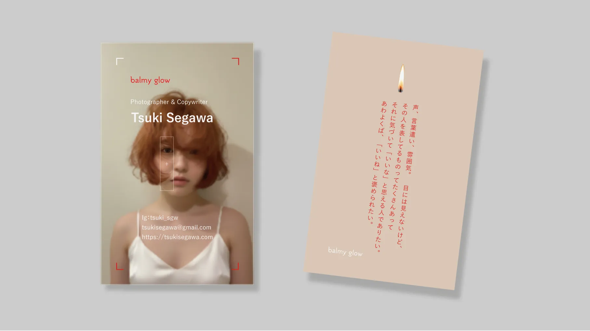

概要
フォトグラファー / コピーライター 瀬川 月希 様（架空）の名刺を制作しました。
単なる自己紹介ではなく、受け取る体験そのものが記憶に残ることを目指しています。
名刺をきっかけに関係性が始まり、その後も余韻として持続するコミュニケーションを設計しました。感性や人柄を伝えるために、写真と言葉によって内側にある温度や気配を立ち上げています。

- 名前や肩書きだけではなく、人柄や感性を伝える名刺がない
- 初対面の短い時間の中で、印象に残る体験にしたい
- SNSだけでなく、直接的で特別な関わり方を作りたい
- 名刺交換を一次的な情報伝達で終わらせず、記憶に残る体験にする
- 写真とコピーの両軸で人柄や世界観を伝える
- 受け取った後のコミュニケーションのきっかけを作る
- クリエイティブ領域で協働する可能性のあるクライアント・パートナー
- 表層的な情報よりも、背景にある思想や文脈を重視する人
- 写真や言葉による表現に価値を感じる人
デザイン設計
ベージュと赤みのあるオレンジをベースに、温かみのある落ち着いたトーンで整えました。表面は本人の写真を大きく使い、フォーカスフレームのような要素によって「見る」という行為に意識を向けています。裏面は大きな余白に、縦組みのコピーと炎のモチーフを置き、「言葉の力で、心を灯す」という表現にしました。表裏であえて情報量に強弱をつけ、直感的な印象と余韻の両立を図っています。
情報設計
表面には名前・肩書き・連絡先を集約し、名刺としての機能性をもたせました。情報は視線の流れに沿って配置し、直感的に伝わる構造にしています。裏面では、あえて具体的な情報を置かず、コピーのみにすることで印象の定着を促しています。本人のコピーを用いることで、名刺を渡したときに会話が生まれるきっかけを作りました。
制作の経緯
言葉を考えることが好きで、日常の中にある感情や気配をすくい上げるように書いてきました。言葉には、誰かの見ている世界をわずかに変えたり、気持ちに灯りをともす力があると感じています。そこで生まれた「わくわく」や「きらきら」が、自分の言葉から生まれたものだったら嬉しいな、という思いがあります。このような個人的な実感を起点に、言葉と写真を通して人の内側に触れる表現を名刺という形で試みました。